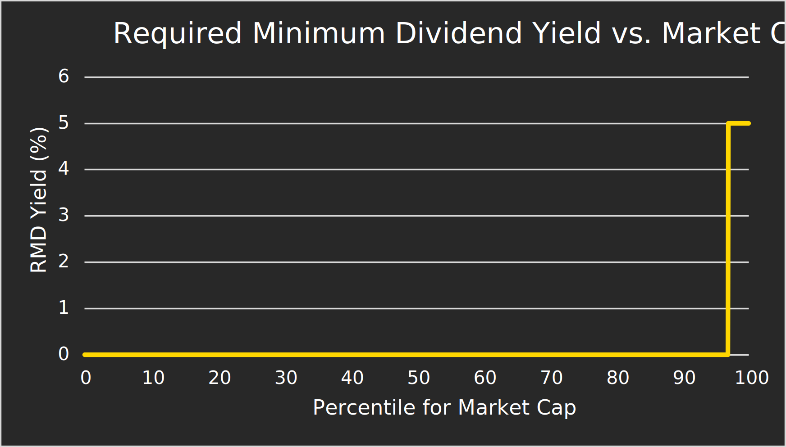

Let's Tax the Rich, Not the Workers
A Capitalist Case for a Constitutional and Enforceable Wealth Tax
It's Time to Unleash the Power of Inclusive Growth
And Raise the Standard of Living for Everyone, not Just the Billionaires
🔰
Imagine a government funded in full off the excess of the overwhelming successes of our wealthiest citizens, a society where the exceptional achievements of a few can significantly and routinely raise the standard of living for everyone across the board. This is what economists call inclusive growth. And we can achieve this with a slight — but significant — tweak to the tax code. 
Why a Wealth Tax?
Let's Fight Wealth Hoarding With Trickle-Down Economics
The economy is a vast, intricate network of millions of individuals that buy and sell goods and services from each other. Think of a giant web of millions of circles, connected organically by lines of volition. Each transaction is a mutually-agreed-upon exchange of value. For example, I can trade $6 for a carton of eggs. Most people see money as inherently valuable, but I see it as a resource. Before I spend the $6, it could be used to buy anything, whether that be a carton of eggs, 24 gumballs, a jpeg of a monkey with a beanie hat, etc. But money only becomes tangibly valuable when it is realized to buy something that is valuable.
For a vast majority of people, this isn't a problem, because we all have a plan to use the money to improve our lives — for groceries, gas, entertainment, school, a car payment, insurance, rent, a house, a wedding, raising a family, that next vacation, retirement — basically, to finance the American Dream while being able to afford the cost of living and discretionary luxuries. But there are some extraordinarily wealthy people who are sitting on millions and millions of dollars of wealth, with no plans to use it. And I don't think it's out of greed or malice; it's simply the case that past some certain point, there's no longer anything to buy. It's not even "the economy of the 99% vs. the economy of the 1%." A vast amount of the wealth in the top 1% has no realistic expectation of ever being used for anything, so it is, by definition, not in the economy. If wealth is being hoarded, then it can't be used in the economy to impart realized, tangible value into the lives of millions of Americans.
In a healthy economy, the money moves around. Yes, we all own money, but there is a social contract to it, too. Make sure you have a plan to realize the value of that money. I'm not about to collect my paycheck at work, then dig a hole in the ground and bury it under 6 feet of dirt and leave it there for 100 years.
Currently, a vast majority of the revenue flowing into the federal government comes from income taxes, which is then used to promote the general welfare and provide for the common defense of the United States (Article I, Section 8). And while serving the common good is practically the sole mission of the US federal government (Preamble to the Constitution), the current system takes away funds that would otherwise be used in the economy to improve workers" individual lives. Under the current tax system, serving the common good of the United States requires a tax on workers.
To me, the solution is obvious. By shifting the burden of tax from the workers to the wealthy, we can increase take-home pay for workers and fund federal programs to serve the common good of the people of the United States. Why tax workers up front, when we can instead wait for some of them to become multi-millionaires or billionaires, and then tax them then? A wealth tax doubly serves as an incentive for the wealthy to use their wealth in the economy, and more broadly punishes economic stagnation while rewarding productivity.
Maybe it used to be the case that high wealth meant high income. But these days, there are trillions of dollars of wealth that are simply being hoarded, while even the highest earners in America would need to work for centuries to catch up. It should easily be possible to fund the government entirely from excessive wealth from the wealthiest among us, which would create a tax system that lauds and rewards people for making it big instead of penalizing productivity. Achieving an astronomical net worth in America is a remarkable, exceptional achievement.
In summary: Hands off the working class; we'll tax the rich, and they'll like it!
The Wealth Gains Tax is Constitutional — Here's Why
An Increase in Net Worth is Taxable Income (According to Economists, not the Supreme Court)
As an engineer, and not a lawyer, I cannot, for the life of me, understand why people collecting their direct deposits on pay day can easily be subject to an income tax on realized income, and the total value of Harlan Crow's properties and land can be taxed indirectly through a split-rate tax, and yet Elon Musk's net worth cannot be taxed in any way other than a direct wealth tax. It's almost as if the tax code was designed to be rigged against ordinary people to protect the ill-gotten gains of the CEOs who ship jobs overseas for profit. Why is it so easy to tax workers' income but so difficult to tax wealth? If it were completely up to me, I would allow indirect taxes to be applied against the total net worth of the top 1% via wealth taxes, because I view unrealized wealth as a resource with a social contract and see no meaningful distinction between net worth, property value, and land value.
And while a constitutional wealth tax would be the holy grail of just and equitable tax law, it would probably be easier to make a strong, viable statutory argument that a wealth gains tax is constitutional. So for the time being, I think it makes the most sense to pursue that.
Haig-Simons Income
I = C + ΔNW
where I is income, C is consumption, and ΔNW is change in net worth
The 16th Amendment
The Congress shall have power to lay and collect taxes on incomes, from whatever source derived, without apportionment among the several States, and without regard to any census or enumeration.
For individuals with a high net worth, any increase in net worth shall be treated as taxable income under the Haig-Simons definition of income — a framework consistent with the 16th Amendment and thus not subject to the apportionment requirement for direct taxes under Article I, Section 9 of the Constitution.
We should let the economists of today define what income is, not a financially illiterate 5-4 court majority from over 100 years ago. If we statutorialy define wealth gains as income, we can fight decades of wage stagnation to fund real tax relief for millions of working people by hiking taxes on the appreciation of the unrealized wealth of the top 1%. And we can do such a tax maneuver with only a simple majority in the Senate.
In the event that the wealth gains tax gets passed into law, this would place the onus on the Supreme Court if they wanted to make a ruling that would so obviously undermine the general welfare of the United States by revoking newfound economic freedom for millions of families to protect the unrealized wealth of a few billionaires.
It is far past time that we overturn Eisner v. Macomber, not only so we can infuse an extraordinary amount of unrealized value into the lives of millions of Americans, but also so that we can completely and permanently defuse, on a legal and structural level, the most notorious and long-standing point of contention in modern politics — the false choice between the common good of the United States and the individual economic freedom of workers.
Come on! We live in the 21st Century! ¿Por qué no los dos? We can easily fund programs that promote the general welfare and provide for the common defense of the United States while reducing income taxes for millions of workers. We really could have it all if we would just allow ourselves to — yes — tax the rich!
How to Enforce a Wealth Gains Tax
If You Can't Do the Time, Then Don't Do the Crime
The extraordinarily wealthy want finance to feel complicated and inaccessible to ordinary people. But at the end of the day, it's just money moving around. We already track ordinary workers" incomes through W-4's for purposes of collecting income taxes. So any attempt for the wealthy to move their money around to avoid a wealth tax must have a clear paper trail — and if it doesn't, it starts looking less like tax avoidance and more like institutionalized money laundering.
The go-to solution for cracking down on tax cheats seems to be increasing funding to the IRS. But instead of attempting to start a multi-billion-dollar arms race between the billionaires and the IRS, it would be far easier, cheaper, and effective to find a Senate parliamentarian that would allow for the imposition of a 6-month prison sentence to punish wealth gains tax evaders, as that would not only be copacetic with the purpose of a budget resolution, but also directly increase revenues by reducing tax evasion. We should surely allow a bill that imposes new taxes to include mechanisms that can enforce the tax. Furthermore, there is no good reason why it is perfectly legal to enforce taxes by throwing billions of dollars at the IRS, but improper to enforce taxes by imposing a minimal prison penalty. Of course, in the case that this is adequately popular, we may be able to avoid the Byrd Rule procedural nonsense entirely and send this through regular order.
The Prosperity Dividend
A Quarterly Robin-Hood-Powered Stimulus
The specific policy I'm envisioning is as follows: Every quarter, we reset the wealth basis of an individual's net worth. If the net worth increases over the quarter, the appreciation would be taxed at the wealth gains tax rate. If the net worth decreases, there would be no tax applied and no tax write-offs for realizing a wealth loss.
Of course, this means that the taxes will only be levied if the rich get richer. So for the cynics who think they'll just avoid the tax, I'll say this: What if the easiest way for the wealth of the top 1% to decrease is for the wealth to actually trickle down? And if it doesn't trickle down, then we can use this wealth gains tax to force it to. The only way for a wealth gains tax to fail to produce tax revenue in the long run would be for a vast majority of all wealthy Americans to fail to get richer or break the law. And not only are rich people really good at getting richer (even in the wake of a once-in-a-century global pandemic); they also would probably prefer to pay taxes that they can easily afford instead of risking a 6-month prison sentence.
It would be beneficial to tie the wealth gains tax rate to the inflation rate (Consumer Price Index) to combat price gouging. I was thinking we set it to either 15% (to match the current long-term capital gains rate) or 5 times the quarterly annualized CPI, whichever one is larger. In other words, I propose a minimum wealth gains tax of 15% on the top 1%, but have the rate increase in the case that inflation exceeds 3%.
In theory, we could increase revenues even more by making the dividend monthly instead of quarterly, which would increase the number of taxable opportunities by increasing the granularity of wealth basis resets. However, it may be easier to start with a quarterly schedule that the IRS is used to operating on instead of requiring additional administrative costs. In either case, we would use W-47 forms to manage compliance with the tax (Why 47? Ask Mitt Romney 🙂).
Also, with W-47 wealth being more volatile than W-4 income, it would make sense to distribute stimulus checks to the bottom 99% on a quarterly basis instead of enacting an income tax cut or tax credit. In this way, we can treat the wealth of the top 1% as a shared national endowment, where the bottom 99% can reinvest the dividends into their own lives. If we find later that we can consistently count on the rich to get richer, then we will be able to pay for an income tax cut by hiking the rate on wealth gains taxes.